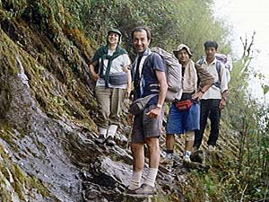
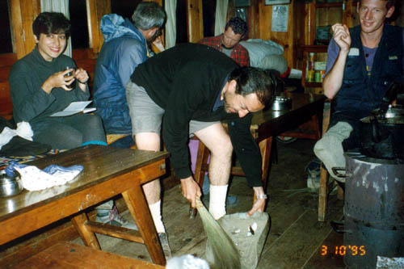
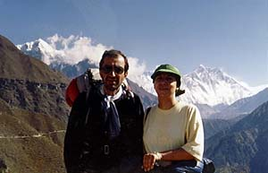
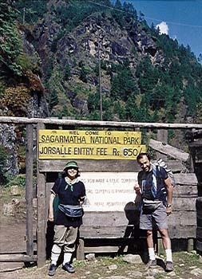
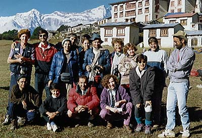

A Trip to Nepal
September 1995
| These are pictures from a trekking trip to Nepal and Himalayas back in 1995. We were a group of Iranian friends 'organized' by Farrokh Mostofi into a tour which took us to Nepal via India. We started our trekking from Jiri and went up to Tieng Buche. We came back to Lukla where we used a helicopter to go back to Katmandu. In the course of the trip we became to be known as 'the Iranian group', and were very popular with other tourists and groups. At one point we had an exiting international evening at Karikola. |

On the way up in tropical forests of Nepal. L. to R. Shahrzad, Ali, Farrokh, and Kata, our local guide.

Ali Parsa sweeping the floor of a tea house in Namche Bazzar. Kathy Lotfi (L) and Mathew of Yorkshire (R) are amused.

With Shahrzad at the foot of Everest (it is barely visible just behind Shahrzad's head, thanks to the photographic genius of Kathy).

The Sagarmatha National Park entrance. Mount Everest is located in this park.

The Formidable Iranian Gang (with some extras) at Tieng Buche with the Buddhist monastery in the back. Front row: Mohammad Mohsenzadeh, Mercedes Safa, Ali Parsa, an Irish friend from UNHCR, Kathy Lotfi. Standing: Mathew from Yorkshire, Saeed Kazemi, Shahrzad, Amin from Seattle, Mandana Navi, Farrokh Mostofi, three Irish girls from UNHCR, Saeed Feyz.


Copyright © Ali Parsa 1998-2011
All rights reserved